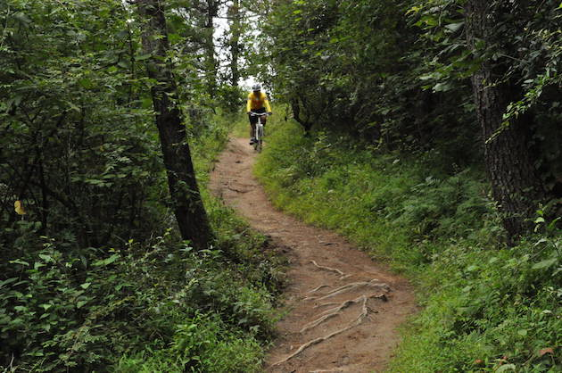

Thimphu
Thimphu is the capital of Bhutan. Its the largest city and the political and economic center of the country. It is one hour drive from Paro. There are many tourist spots in Thimphu.
| Sl. No. | Tourist Spot | Highlights |
|---|---|---|
| 1 | Takin Zoo | It is located at upper Thimphu and houses animals like Takins, Deers and wild dogs. Takin is the national animal of Bhutan and it is a protected species. |
| 2 | Kuensel Phodrang | Kuensel Phodrang has two main attractions, a nature reserve and a statue of Buddha which is 169 tall and is one of the largest statues in the world. |
| 3 | Royal Botanical Park | Royal Botanical Park is located Serbithang, south Thimphu. It hosts an arboretum, orchid garden, nursery, plant shop and a playground for kids. |
| 4 | Mountain Biking Trail | There are mountain biking trails all across the mountains surrounding Thimphu valley. It is one of the main attractions for locals as well as tourists. |
| 5 | Dochula Pass | Dochula pass is located between Thimphu and Wangdiphodrang at a altitude of 3150 meters above sea level. Dochula is home to 108 memorial stupas. From Dochula, visitors can see some of the highest Himalayan mountains like Gankar Puensum and Jichudrakey. It also hosts the annual Dochula cultural festival. |

Mountain biking in and around Thimphu (© Sithar Norbu, 2017. Reproduced with expressed permission.)